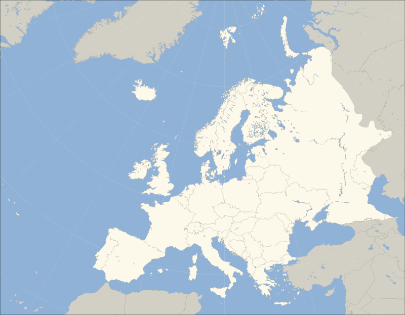
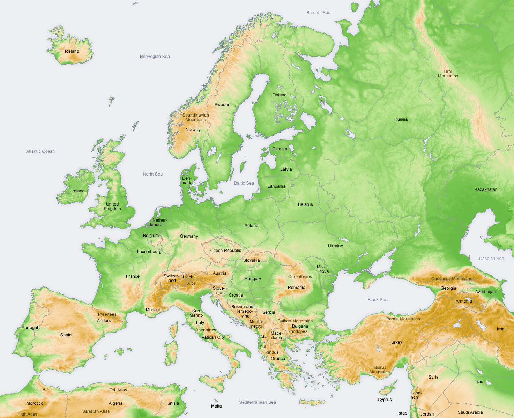

- Europe is a continent located entirely in the Northern Hemisphere and mostly in the Eastern Hemisphere.
It is bordered by the Arctic Ocean to the north, the Atlantic Ocean to the west and the Mediterranean Sea to the south.
It comprises the westernmost part of Eurasia.
- Since around 1850, Europe is most commonly considered to be separated from Asia by the watershed divides of the Ural and Caucasus Mountains, the Ural River, the Caspian and Black Seas and the waterways of the Turkish Straits.
Although the term "continent" implies physical geography, the land border is somewhat arbitrary and has moved since its first conception in classical antiquity.
The division of Eurasia into two continents reflects East-West cultural, linguistic and ethnic differences, some of which vary on a spectrum rather than with a sharp dividing line.
The border does not follow political boundaries, with Turkey, Russia and Kazakhstan being transcontinental countries.
- Europe covers about 10,180,000 square kilometres (3,930,000 sq mi), or 2% of the Earth's surface (6.8% of land area).
Politically, Europe is divided into about fifty sovereign states of which the Russian Federation is the largest and most populous, spanning 39% of the continent and comprising 15% of its population.
Europe had a total population of about 741 million (about 11% of the world population) as of 2016.
The European climate is largely affected by warm Atlantic currents that temper winters and summers on much of the continent, even at latitudes along which the climate in Asia and North America is severe.
Further from the sea, seasonal differences are more noticeable than close to the coast.
- In 1949 the Council of Europe was founded, following a speech by Sir Winston Churchill, with the idea of unifying Europe to achieve common goals.
It includes all European states except for Belarus, Kazakhstan and Vatican City.
Further European integration by some states led to the formation of the European Union (EU), a separate political entity that lies between a confederation and a federation.
The EU originated in Western Europe but has been expanding eastward since the fall of the Soviet Union in 1991.
The currency of most countries of the European Union, the euro, is the most commonly used among Europeans; and the EU's Schengen Area abolishes border and immigration controls among most of its member states.
The European Anthem is "Ode to Joy", and states celebrate peace and unity on Europe Day.